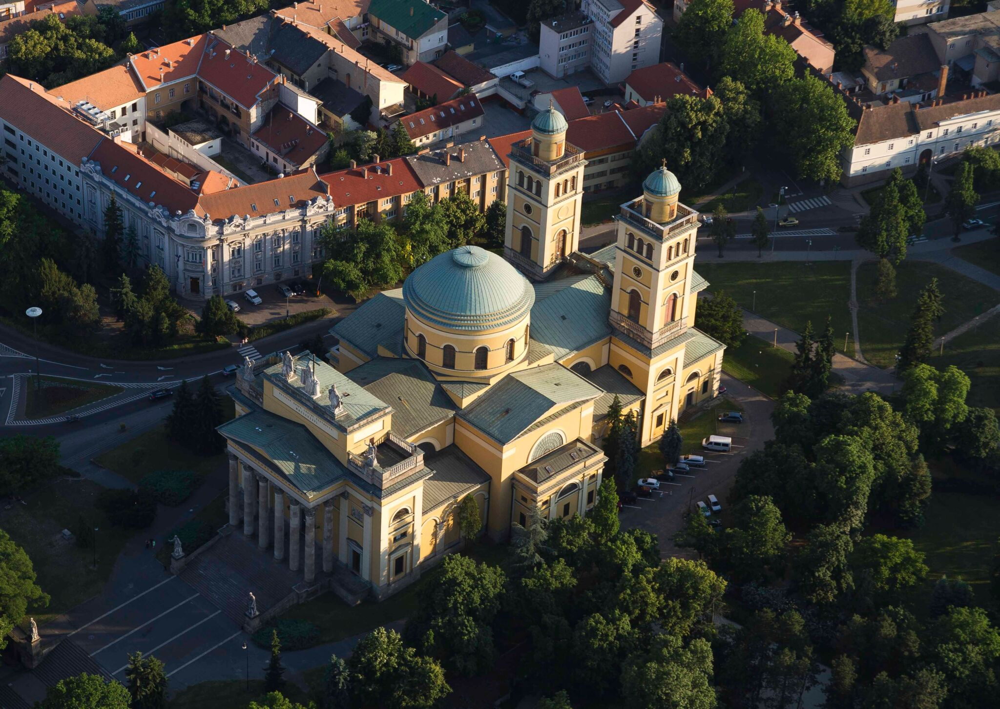
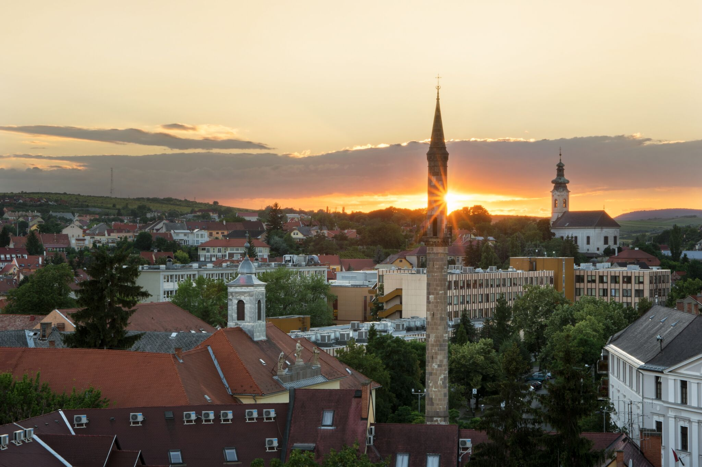
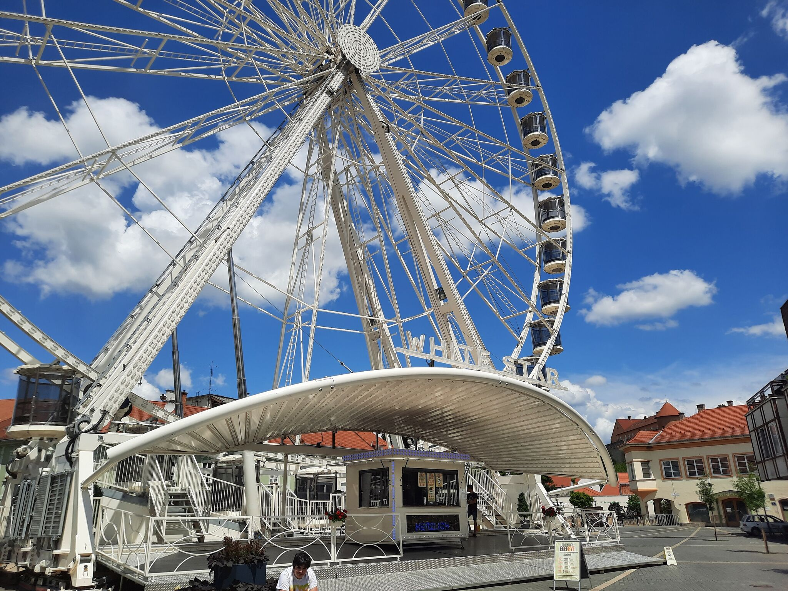
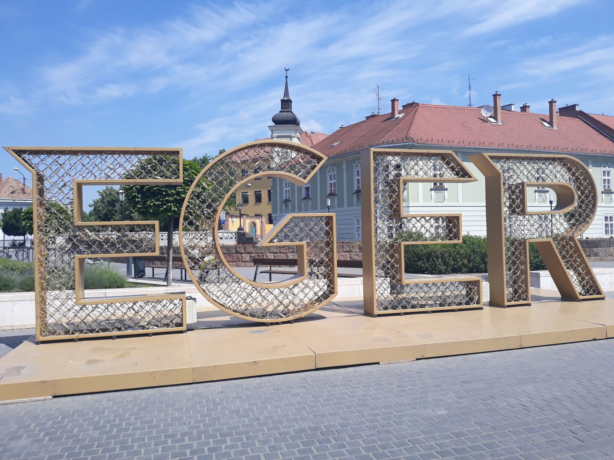
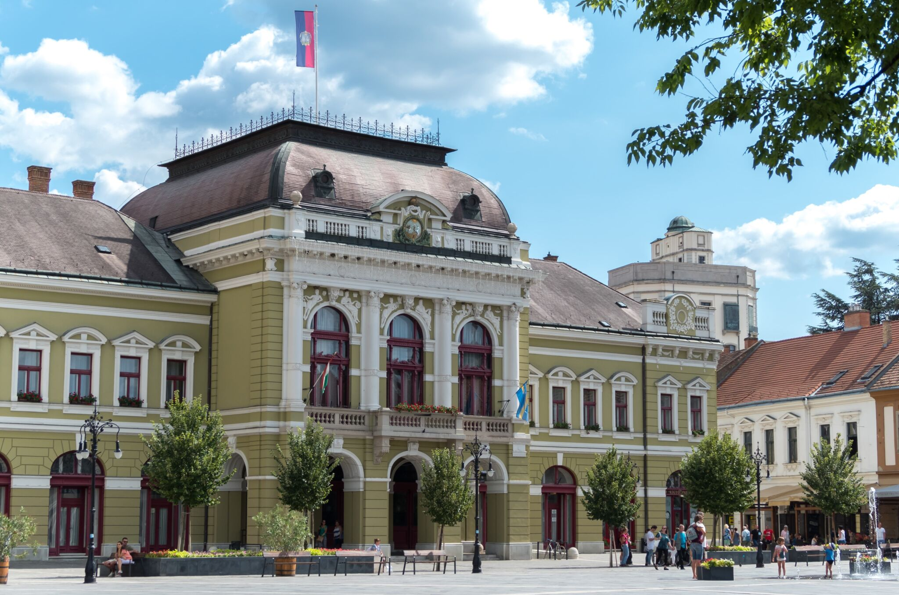

Eger megyei jogú város, Heves megye és az Egri járás székhelye. Eger ezeréves városának városképe hosszas fejlődés után alakult ki. A barokk formavilága, a középkori török emlékek jellegzetes építészetet teremtettek itt.
A város a Mátra és a Bükk hegység között folyó Eger patak völgyében a Bükk nyugati lábánál húzódó dombvidéken fekszik. Tengerszint feletti magassága 180 méter, keleti oldalán emelkedik az Eged és a Várhegy, melyek a Bükk délnyugati nyúlványát alkotják.
A 2011-es népszámlálás adatai szerint Észak-Magyarország második legnépesebb városa. Eger jelentős oktatási és kulturális központ, itt található Magyarország egyik legnagyobb bazilikája, az egri főszékesegyház, számos más híres műemlékkel és múzeummal is rendelkezik, melyek közül kiemelkedő az egri vár. Eger nevű város volt a mai Csehország nyugati területén, mai neve Cheb, valószínűleg vidékéről települtek át Egercsehi lakói Nagy Károly frank uralkodó hódítása elől.
A dinamikusan fejlődő magyar városok közé tartozik. Az elmúlt évtizedekben utak épültek, és velük párhuzamosan az ipari park jelentősége is nőtt, számos bevásárlóközpont létesült. Az egri borvidék központjaként a legjelentősebb magyar borvárosok közé tartozik, az egri bikavér külföldön is ismert és elismert borfajta.
Látnivalók
Szépasszony völgye

Egri Bazilika

Egri Minaret

EgerEye Óriáskerék

Eger felirat

Városháza
Népesség
Év
1970
1980
1990
2001
2011
2021
Népesség
47960
60896
61573
57986
56569
51168
Rendezvények
Egri Tavaszi Fesztivál (március vége, április eleje)
Agria Nyári Játékok (egész nyáron)
Végvári vigasságok (július vége)
Szépasszonyvölgyi Fesztivál (augusztus közepe)
Eger Ünnepe (szeptember közepe)
Egri Vár Napja (október 17.) - a vár összes múzeuma ingyenesen látogatható